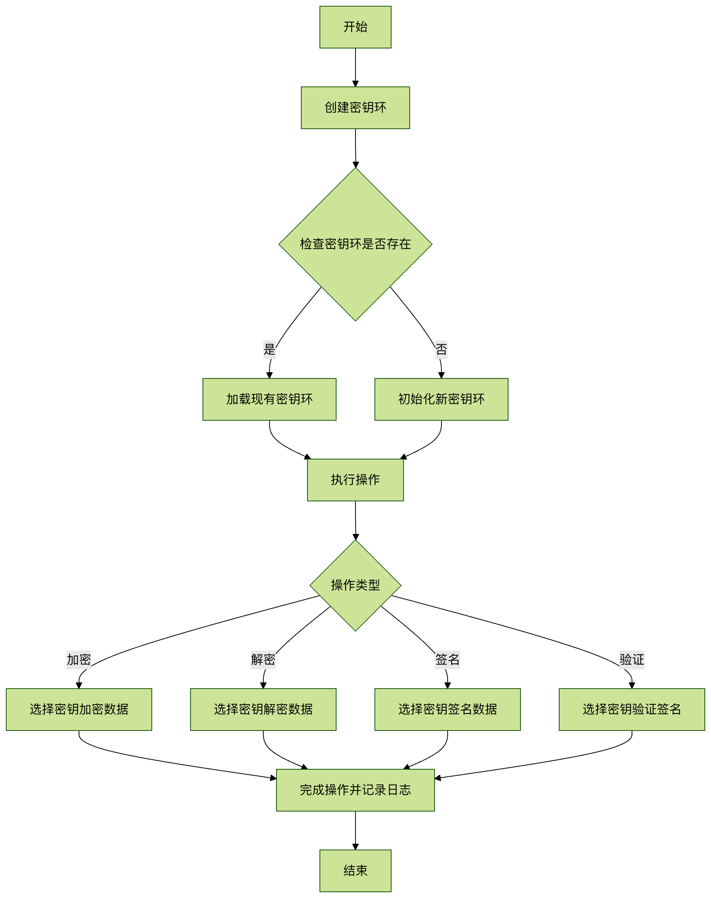

Linux gpg コマンド
GPG（GNU Privacy Guard）は、GNU プロジェクトによって開発された OpenPGP 標準の実装ツールであり、データの暗号化・復号化、およびデジタル署名の作成と検証に使用されます。これは PGP（Pretty Good Privacy）のオープンソース代替品であり、ファイル暗号化、電子メールのセキュリティ保護、ソフトウェアパッケージの署名検証などの場面で広く利用されています。
基本的な構文構造
gpg コマンドの基本構文は次のとおりです：
gpg [选项] [命令] [文件名]
主な構成要素：
- オプション：GPG の動作を制御するさまざまなパラメータ
- コマンド：実行する操作の種類を指定します
- ファイル名：処理対象のファイル（省略可能）
よく使うコマンドパラメータ
鍵管理
| パラメータ | 説明 |
|---|---|
--gen-key |
新しい鍵ペアを生成 |
--list-keys |
すべての公開鍵を一覧表示 |
--list-secret-keys |
すべての秘密鍵を一覧表示 |
--delete-key |
公開鍵を削除 |
--delete-secret-key |
秘密鍵を削除 |
--import |
鍵をインポート |
--export |
鍵をエクスポート |
暗号化/復号化操作
| パラメータ | 説明 |
|---|---|
--encrypt (-e) |
ファイルを暗号化 |
--decrypt (-d) |
ファイルを復号化 |
--sign (-s) |
署名を作成 |
--verify |
署名を検証 |
--armor (-a) |
ASCII 形式の出力を生成 |
その他の一般的なオプション
| パラメータ | 説明 |
|---|---|
--recipient (-r) |
受信者の鍵を指定 |
--output (-o) |
出力ファイルを指定 |
--passphrase |
パスフレーズを指定 |
実際の応用例
1. 鍵ペアの生成
gpg --gen-key
実行後、対話形式で次のように尋ねられます：
- 鍵の種類（通常はデフォルトの RSA と RSA を選択）
- 鍵の長さ（4096 ビットを推奨）
- 鍵の有効期限
- ユーザー識別情報（名前とメールアドレス）
- パスフレーズ
2. ファイルの暗号化
gpg --encrypt --recipient alice@example.com --output secret.txt.gpg secret.txt
--recipient受信者の公開鍵を指定（メールアドレスで識別）--output暗号化後の出力ファイルを指定- 最後のパラメータは暗号化する元のファイルです
3. ファイルの復号化
gpg --decrypt --output plain.txt secret.txt.gpg
システムは秘密鍵のパスフレーズの入力を求めます
4. 署名の作成と検証
署名の作成：
gpg --sign --output document.sig document.txt
署名の検証：
gpg --verify document.sig document.txt
5. 公開鍵のエクスポート
gpg --armor --export alice@example.com > alice.pub.asc
--armorオプションで ASCII 形式の公開鍵ファイルを生成します
鍵管理の実践
キーリング操作の流れ

鍵の信頼関係の設定
-
他人の公開鍵をインポート：
gpg --import bob.pub.asc
-
鍵のフィンガープリントを検証：
gpg --fingerprint bob@example.com
-
鍵に署名して信頼関係を構築：
gpg --sign-key bob@example.com
よくある質問と回答
1. 復号化のたびにパスワードを入力しなくて済むようにするには？
gpg-agent を使用してパスワードをキャッシュ：
gpg --use-agent --decrypt file.gpg
2. 紛失した鍵を失効させるには？
-
失効証明書を生成：
gpg --gen-revoke your@email.com > revoke.asc
-
失効証明書を公開：
gpg --import revoke.asc
3. 大きなファイルを暗号化する際のベストプラクティスは？
対称暗号化と非対称暗号化を組み合わせて使用：
gpg --symmetric --cipher-algo AES256 largefile.iso
セキュリティ上の注意事項
- 秘密鍵の保護：秘密鍵ファイルは適切に保管し、強力なパスフレーズを使用することを推奨します
- 鍵のバックアップ：キーリングと失効証明書を定期的にバックアップします
- アルゴリズムの選択：AES-256 や RSA-4096 などの強力な暗号化アルゴリズムを推奨します
- 鍵の有効期限：適切な鍵の有効期限を設定し、定期的に更新します
- メタデータの漏洩：暗号化時にファイル名などのメタデータを保持しないようにするには、次のオプションを使用できます
--throw-keyidsオプション
gpg コマンドを習得することで、機密データの安全性を効果的に保護し、安全なファイル転送と本人確認を実現できます。実際に使用する前に、テスト環境で各操作に慣れておくことをお勧めします。
その他の拡張